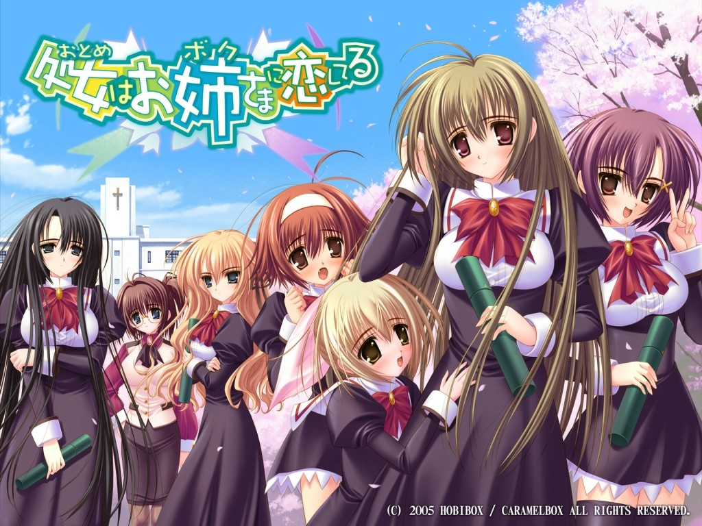

Английское название: Otome wa Boku ni Koishiteru
Русское название: Девушка влюбилась в старшую сестру
Число серий: ТВ (12 эп.+спешл), 25 мин.
Жанр: Комедия, Романтика, Школа,
Создатели:Нава Мунэнори
Оценка:7.9/10
Год выпуска: 2006

Описание аниме: Согласно завещанию деда, наш герой, Мидзухо Миянокодзи, должен отныне учиться в закрытой католической школе Сэйо. Все бы ничего, но школа — женская! И хотя достопочтенная госпожа директор, давно знающая семью Миянокодзи, согласна принять его в своем заведении — но только в качестве девушки! Что ж — не смея перечить воле покойного, юный школяр с помощью неугомонной кузины Марии, набора косметики и некоторых добавлений к фигуре превращается в юную школьницу. Но, оказавшись в новой школе, родственники начинают понимать, что, кажется, чуточку перестарались… Трясущегося от страха Мидзухо встречают дружным вздохом восхищения — еще бы! Высокая, с фигурой модели и волной светлых волос, ниспадающих аж ниже талии, она производит фурор среди впечатлительных школьниц! Когда же выясняется, что эта красавица к тому же отличница и спортсменка, общий приговор уже обжалованию не подлежит — Мидзухо-тян должна участвовать в выборах на неформальную должность «старшей сестры» — Самой Лучшей Девушки школы, которая своим примером должна вдохновлять и воспитывать других девушек!...
Назад